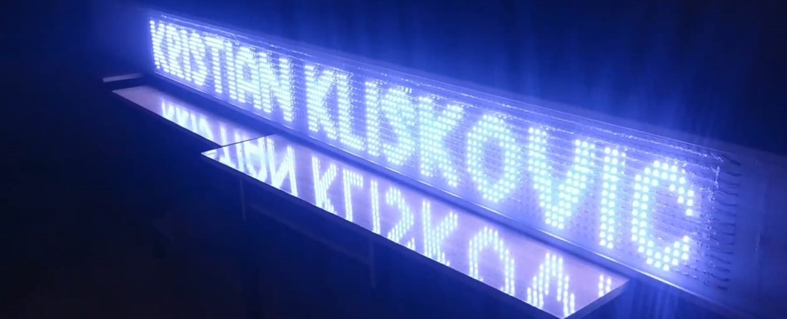

Informacijski LED display
U današnjem vremenu, kada tehnologija ima sve veći utjecaj u našim
životima, vodeće tehnološke kompanije sve više truda i vremena
ulažu upravo u ovakve uređaje. Kako preko ovakvih uređaja sve više
stvari obavljamo jako je bitna tehnologija na kojoj funkcionira.
U ovom radu je prikazano kako različita tehnologija nudi različite
mogućnosti prijenosa informacija. LED informacijski displayi se
danas sve više koriste zbog kvalitetnog prikaza informacija te
zbog jednostavnog izmjenjivanja poruka. On se često koristi na
javnim mjestima te izlozima trgovina i drugim mjestima gdje je
potrebno iznošenje promjenjivih informacija.
Izrada završnog rada nas je dovela u razne izazove iz područja
programiranja, spajanja modula, povezivanja uređaja s internetom,
spajanja komponenti u jednu cjelinu. Bilo je puno stvari koje
nisu išle po planu, pa smo tražili pomoć mentorice, drugih
profesora u školi te ravnateljice. Nakon izrade ovog rada
smo sposobniji suočiti se sa raznim izazovima s područja
elektrotehnihe i računalstva. Zadovoljni smo međusobnom
suradnjom s mentoricom. Zahvaljujemo joj se na strpljenju
i uloženom trudu.

Odabir izrade završnog rada „Informacijski LED display“, odlučio
sam se radi izazova povezivanja različitih elektroničkih i računalnih
područja znanosti. Funkcija mog rada je ispis informacija na zaslonu
načinjenom od LE-dioda. Može se ispisivati tekst i brojke. Tekstualne
obavijesti se mogu učitati preko interneta, brojkama se ispisuju datum
i trenutno vrijeme. Izradom display-a očekivao sam povezivanje i
otkrivanje novih trendova u svijetu programiranja, spajanja Arduino
modula, IoT projekata te naposljetku lemljenja i sličnih
fino-mehaničkih stvari.
Ideja za izradu počela je 2016. godine. Profesorica Vuković
nam se obratila i rekla da već par godina ima ideju za rad
poput ovoga kojeg smo mi izradili. Imali smo u planu napraviti
uređaj koji preko LE-dioda prikazuje određene tekstualne
obavijesti. Na početku smo mislili izvesti cijeli zaslon
sa 5 ili 10 mm širokim bijelim LE-diodama, no od toga smo
odustali zbog velike količine posla koji je vezan uz lemljenje
svih LE-dioda. Kasnije je dodana funkcija povezivanja na
Internet pa je projekt postao i IoT (Internet of things).
Moj rad bi imao jako bitnu praktičnu primjenu, služio bi
profesorima Tehničke škole u efikasnijem širenju obavijesti svojim učenicima.